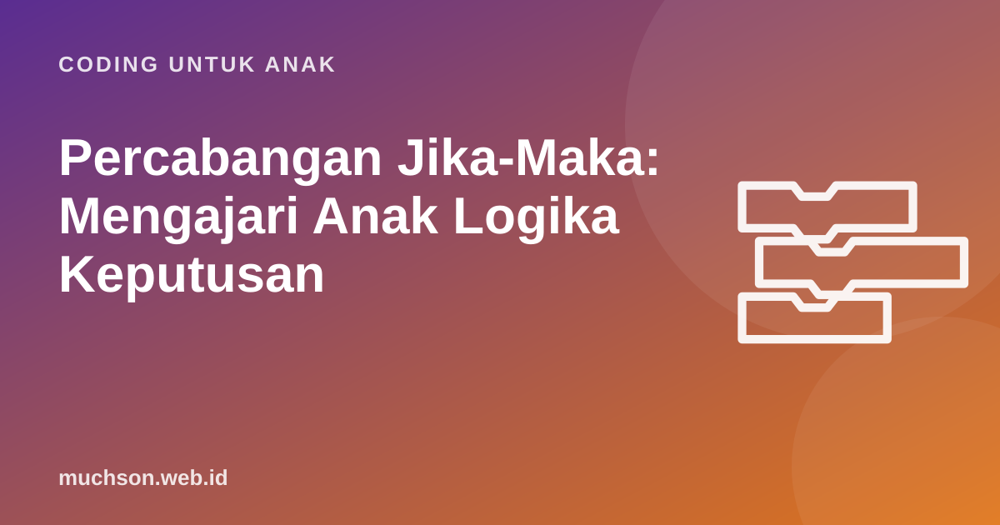

Beranda › Artikel › Coding untuk Anak
Coding untuk AnakPercabangan Jika-Maka: Mengajari Anak Logika Keputusan
Program yang hanya berjalan lurus tidak bisa bereaksi. Game baru terasa hidup ketika komputer bisa memutuskan: jika pemain menyentuh bintang, tambah skor; jika menyentuh meteor, kurangi nyawa. Inilah percabangan. Kabar baiknya, anak sudah memakai logika ini setiap hari. Tugas kita tinggal menamainya.

Percabangan di kehidupan anak
Percabangan (conditional) adalah perintah yang hanya dijalankan bila suatu kondisi benar. Bentuk dasarnya: jika kondisi, maka lakukan sesuatu. Bentuk lengkapnya menambah jika tidak, yaitu hal lain yang dilakukan bila kondisi salah.
| Kondisi (jika ...) | Maka | Jika tidak |
|---|---|---|
| Hujan | bawa payung | pakai topi |
| Lampu merah | berhenti | jalan |
| PR sudah selesai | boleh main | kerjakan PR dulu |
| Nilai di atas 75 | tuntas | remedial |
Ajak anak membuat tabel serupa tentang hari-harinya. Kalimat "kalau ..., aku ..." yang ia ucapkan sendiri adalah percabangan. Dari situ, lompatan ke blok coding terasa alami.
Diagram alur keputusan
Percabangan di Scratch
Di Scratch, percabangan ada di kategori Kontrol: blok jika ... maka dan jika ... maka ... jika tidak. Kondisinya berbentuk segi enam dan diambil dari kategori Penginderaan (misalnya "menyentuh tepi?") atau Operator (misalnya "skor > 10").
Perhatikan skrip kiri: percabangan berada di dalam loop selamanya. Kenapa? Karena komputer harus terus memeriksa apakah sprite menyentuh meteor. Kalau "jika" hanya dijalankan sekali di awal, pemeriksaan itu terjadi sekali saja lalu tidak pernah lagi. Ini kesalahan paling umum pemula, dan memahaminya adalah lompatan besar.
Menggabungkan kondisi: dan, atau, tidak
Kadang keputusan butuh lebih dari satu syarat. Scratch menyediakan operator dan, atau, dan tidak.
| Operator | Benar jika ... | Contoh sehari-hari |
|---|---|---|
| dan | kedua syarat benar | Boleh main game jika PR selesai dan sudah makan |
| atau | salah satu syarat benar (atau keduanya) | Dapat hadiah jika juara kelas atau rajin membantu |
| tidak | syaratnya salah | Main di luar jika tidak hujan |
Permainan logika tanpa layar
- Simon berkata versi jika. "Jika kamu memakai baju merah, angkat tangan. Jika tidak, tepuk tangan."
- Sortir kartu. Kumpulkan kartu bergambar binatang. "Jika bisa terbang, taruh di kiri. Jika tidak, di kanan." Lalu tambah syarat: "Jika bisa terbang dan berkaki dua ..."
- Pohon tebak-tebakan. Anak memikirkan satu binatang, Anda hanya boleh bertanya ya/tidak. Gambar pertanyaan-pertanyaannya sebagai pohon keputusan.
Pohon tebak-tebakan adalah versi sederhana dari "pohon keputusan" (decision tree), salah satu metode dasar dalam kecerdasan buatan. Anak sedang belajar ide yang dipakai ilmuwan data.
Dari jika-maka ke game sungguhan
Hampir setiap aturan game adalah percabangan: jika skor mencapai 10, naik level; jika nyawa habis, game selesai; jika tombol spasi ditekan, lompat. Setelah memahami percabangan dan loop, anak sudah punya dua alat terpenting untuk membuat game sendiri. Di PixelKode, konsep ini dilatih dulu dengan Robo yang harus memilih jalan, lalu langsung dipakai di game "Tangkap Bintang" buatan anak.
Tanya jawab
Apa itu percabangan dalam pemrograman?
Apa beda "jika maka" dan "jika maka jika tidak"?
Kenapa blok "jika" di game saya tidak bekerja?
Umur berapa anak bisa paham operator dan, atau, tidak?
Sumber dan bacaan lanjut
- Scratch untuk pendidik
- Brennan & Resnick (2012). Kerangka berpikir komputasional (konsep kondisi dan operator)
- CS Unplugged
- Code.org: kurikulum CS Fundamentals